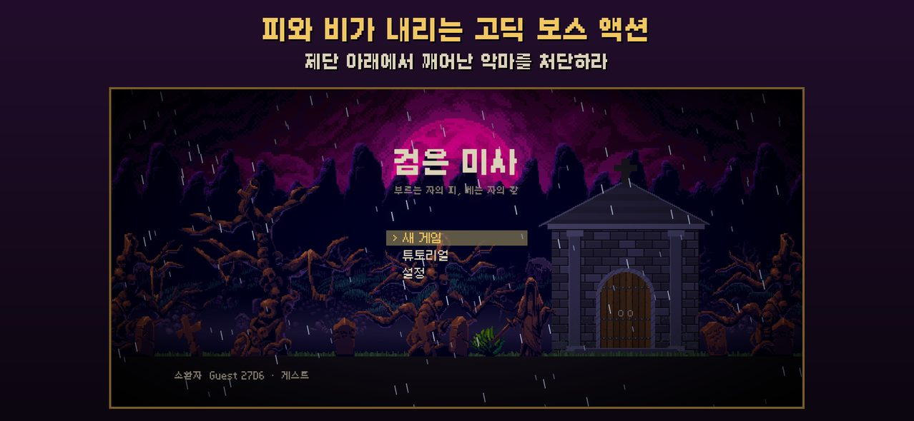

검은 미사 지원
악마 사냥꾼 처단자가 되어 교단의 악마를 쓰러뜨리는 픽셀 아트 보스 액션 게임, 검은 미사의 지원 페이지입니다.
문의하기
게임 중 문제가 생기거나 제안하고 싶은 내용이 있으면 이메일로 보내 주세요.
기기 모델, iOS 버전, 앱 버전, 그리고 문제가 생긴 화면(가능하면 스크린샷)을 함께 알려 주시면 더 빨리 도와드릴 수 있어요.
자주 묻는 질문
보스를 이기기 너무 어려워요.
금빛으로 빛나는 공격은 가드 버튼을 타이밍에 맞춰 눌러 패링할 수 있어요. 바닥이 빛나는 곳은 대시로 피하세요. 코인으로 뼈 상인에게서 무기와 강화를 사고, 무기고에서 장비를 바꿔 보세요. 교단 토벌 던전에서 얻는 축복 카드도 큰 도움이 됩니다.
'사냥에 나선다'가 잠겨 있어요.
사냥은 교단 토벌을 끝까지 마치면 열립니다. 처단자 메뉴의 '교단 토벌'로 이야기를 먼저 진행해 주세요.
강령 제단(보스 만들기)은 어떻게 여나요?
강령 제단도 교단 토벌을 마치면 열립니다. 만든 악마는 시험 전투로 직접 이겨야 검증되고, 그 뒤에 다른 처단자들이 도전할 수 있습니다.
랭킹에 기록이 올라가지 않아요.
랭킹은 인터넷에 연결되어 있을 때 올라갑니다. 오프라인에서 세운 기록은 기기에 보관되었다가 다시 연결되면 자동으로 올라가요.
진동이나 소리를 끄고 싶어요.
메인 화면의 '설정'에서 진동, 배경음, 효과음 크기를 바꿀 수 있습니다. 진동은 패링과 보스를 쓰러뜨리는 마지막 일격에서만 울립니다.
게임 컨트롤러로 할 수 있나요?
네. 블루투스로 연결한 게임 컨트롤러를 지원합니다. 연결하면 화면의 터치 버튼 대신 컨트롤러로 조작할 수 있어요.
진행 상황을 처음부터 다시 하고 싶어요.
메인 화면의 '새 게임'을 고르면 처음부터 시작합니다. 이때 처단한 악마와 모은 코인은 사라지지만 소환자 이름은 유지됩니다.
앱 내 구입이나 광고가 있나요?
없습니다. 코인과 장비는 모두 게임을 플레이하며 얻습니다.
저작자 표시
검은 미사는 아래 작가들의 무료 에셋을 사용했습니다. 고맙습니다.
- "Red Dragon" — ZaPaper, OpenGameArt.org (CC-BY 3.0)
- "Animated Minotaur" — Calciumtrice, OpenGameArt.org (CC-BY 3.0)
- "Heavy Slamdoor" — Spring Spring, OpenGameArt.org (CC-BY 4.0)
- "Pixel Crawler" — Anokolisa
- "Dark Fantasy Asset Pack" — jfancipx
- "6 Dark Fantasy Boss Battle Tracks" — alkakrab
- Gothicvania Church Pack, Gothicvania Cemetery Pack — ansimuz (CC0)
- 그 밖의 CC0 그림과 소리 — rubberduck, kindland, Brandon75689, yd, 0x72, andhegames, Sean Noonan, spring-spring, dkucook, netgfx, Master484 외 OpenGameArt.org 작가들
- Galmuri 폰트 — Lee Minseo (SIL Open Font License 1.1)